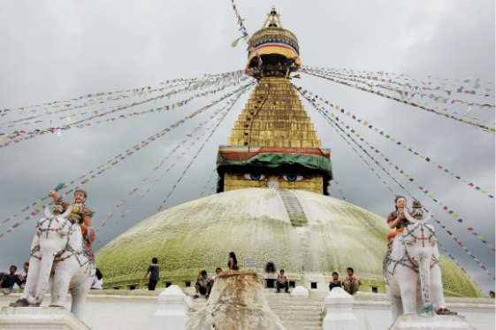
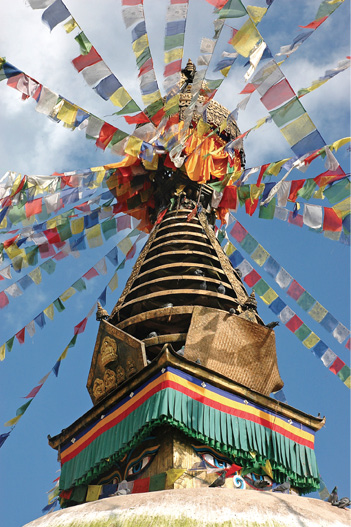

NEPAL, 20 Ağustos
Hayatımızın zirvesi olacak bir yolculuk yaptık. Hatırladıkça şaşıyorum her anına. Belki şimdi dünyanın zirvesini de uzaktan görebileceğiz.
Bütün gün dağcılık malzemesi satan yerleri gezdik. Bütçemiz sınırlı, almak istediğimiz malzeme ise çok fazla. Burası da bu işin merkezi. Karar vermek çok zor. Çok fazla ürün var, çoğunluğu da çok iyi taklit edilmiş sahte ürünlerden oluşuyor.
Farkında olmadan çok yorulmuşuz. Gece olmasına rağmen dışarıda bangır bangır müzik çalmaya devam ediyor. Günlerce çalsa bıkmayacağım kadar güzel aslında, şikâyetçi değilim. Bu ezgileri Katmandu’nun tüm sokaklarında duymanız mümkün. Yalnız bu kadar yüksek ses kullanılması hoş değil. Sonuçta bunlar kutsal ayinlerde, Budist manastırlarında çalınmıyor mu?
Yine de bu yorgunluğun üstüne ninni gibi geliyor. Nemli havadan dolayı camları kapatmak mümkün değil. Müzik kapanana kadar duymaya devam edeceğiz. Yarın yine alışveriş var. Erken yatmalıyım. Defterin sayfaları da azalıyor. Artık daha az yazmalıyım.
Yazmaktan da yoruldum. İyi geceler Katmandu.

Nepal, Katmandu
Boudhanath Stupası.

Nepal, Katmandu
Swayambhunath Stupasında rüzgârla dans eden
dua bayrakları belki de Tibet’in özgürlüğü için dalgalanıyor.